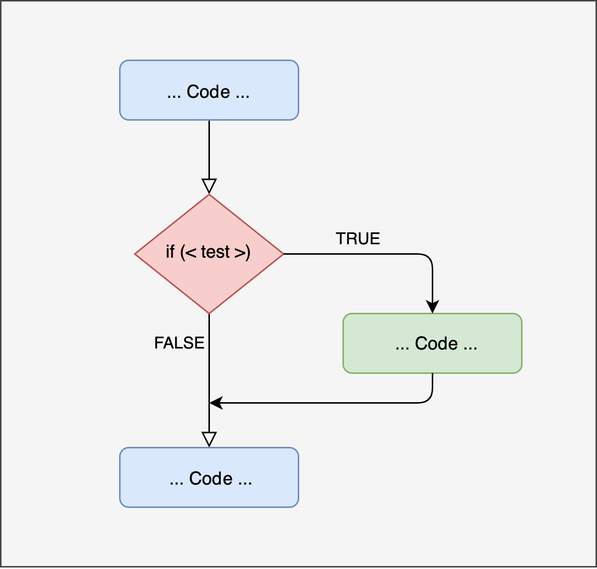
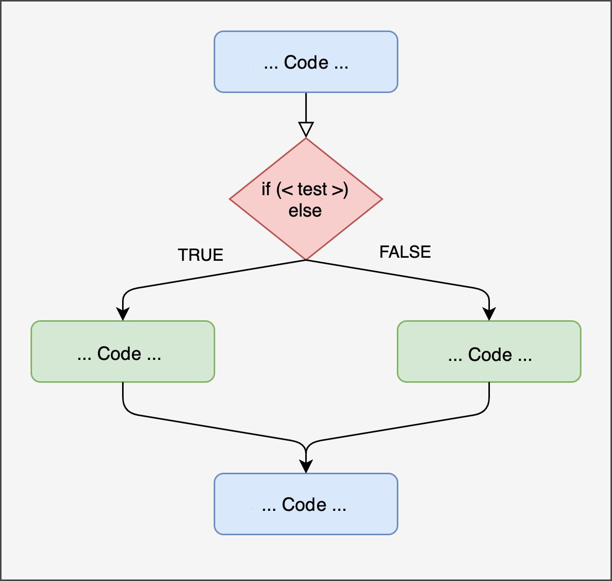
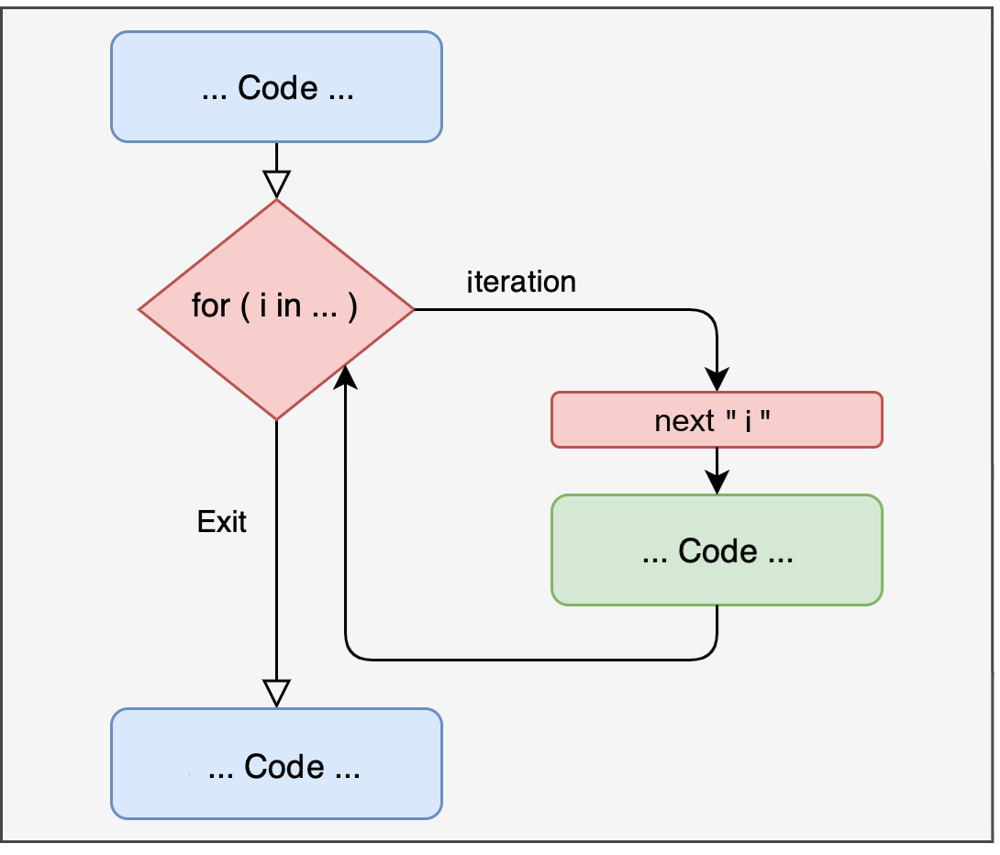

age = 20Conditional statements like if, if...else, and ifelse in R are essential tools for automating tasks and assisting decision making in data science. What follows are a few simple “toy examples”, but focus on the underlying logic. This will be greatly useful in more advanced applications
if statementif statement performs an action only if a condition is met
if statementBasic flowchart showing the logic of the if statement:

if...else statementSometimes, however, you may need to perform alternative actions

if...else statementSometimes, however, you may need to perform alternative actions
Here is a practical example of theif...else statement
In the above example:
age is 18 or older, R will print "Adult";"Minor"if...else if...else statementif...else statements
if...else statementPossible, pratical use of if...else in a preplanned analysis for a hypothetical preregistered study: automate the decision to conduct additional analyses based on the result of a preliminary test. This helps create a reproducible analysis pipeline with a clear set of decisions
## PREPLANNED ANALYSIS
# preliminary test
tt1 = t.test(x1, x2, data=df, paired=TRUE)
# based on the p-value of the preliminary t-test, choose the next step
if (tt1$p.value < 0.05) {
# If significant, perform an additional analysis with a linear model (lm)
print("Significant result: proceeding with follow-up analysis")
fit = lm(outcome ~ pred1 + pred2 * moder1, data = df)
summary(fit)
} else {
# else, report only the preliminary test
print("No significant result: reporting preliminary results only")
print(tt1)
}ifelse statementAll previous statements work with a single value at a time. However, you often want to apply this type of operation to an entire vector
Using if and if..else directly on a vector will NOT work as intended:
ifelse statementAll previous statements work with a single value at a time. However, you often want to apply this type of operation to an entire vector
To handle such cases you can use the base ifelse function, that evaluates each element of a vector individually:
[1] "Minor" "Adult" "Minor" "Minor" "Minor" "Adult" "Adult" "Minor" "Minor"…of course, it is always recommended to store the output:
ifelse statementThe ifelse statement can also be nested to manage multiple conditions, such as in the following example:
Iterative programming allows you to repeat one or a series of actions automatically, for a predetermined number of times or until a condition is met
Let’s start with understanding the basics of iterative programming with the for loop:

for loopfor loop
for loopHere’s a more interesting example of iterative for loop with practical usefulness: we want to repeat a data simulation for a predetermined number of times (5 iterations), each time drawing \(n = 30\) values from a standard normal distribution, computing and displaying the average … (This is actually the starting point of a Monte Carlo simulation! 😃)
for loopIn fact, in the previous example, the for loop displayed the results but didn’t store it. For more effective use, you can combine the for loop with indexing with [] to save each result:
set.seed(0) # set a seed for reproducibility: best practice!
niter = 5 # set the desired number of iterations: best practice!
# initialize a results vector with NAs: best practice!
results = rep(NA, niter)
# now run the for loop! :-)
for(i in 1:niter){
x = rnorm(n = 30, mean = 0, sd = 1)
results[i] = mean(x)
}
results # display results[1] 0.021950789 -0.025771530 -0.009581231 0.032123159 -0.294644080[1] 0.1358843for loop→ Enjoy it! This is a proper estimation of the Standard Error of the Mean via Monte Carlo simulation! 😊
while loopThe while loop is another type of iterative structure in R. It may be useful when the precise number of iterations is not predetermined, but depends on a target being reached
amount = 1000
month = 0
interest_rate = 0.001 # 0.1% monthly interest rate
while(amount < 1500){
month = month + 1
amount = amount + amount * interest_rate
}
month[1] 406Interpretation: it takes 406 months to reach an amount of \(€1,500\) when starting with an amount of \(€1,000\) with a \(0.1\)% monthly interest rate
repeat loopThe repeat loop has a logic similar to the while loop but 1) it always runs at least one iteration, 2) It explicitly emphasizes repetition until a condition (not necessarily a target) is met, using a break statement to terminate
apply familyapply is a family of base functions that provide efficient tools for running iterations on structures like dataframes, vectors, matrices, lists
Traditional loops provide a straghtforward, intuitive way to compute sequences of operations, but the apply family allows you to run faster computations… this may become particularly important when you need to parallelize for computationally intensive tasks
The following is not a computationally heavy task — but for example, let’s say we want to compute the mean value per column in this dataframe:
BD SI DS PCn CD VC LN MR CO SS
1 13 10 7 10 15 7 10 16 8 13
2 7 11 6 8 13 10 9 5 9 14
3 12 6 5 7 9 7 7 6 9 8
4 8 7 9 11 1 5 7 6 8 4
5 12 13 8 10 10 10 9 11 13 12
6 13 17 13 7 10 19 13 10 15 13
7 12 10 9 5 10 8 7 9 11 11
8 9 12 15 14 7 11 14 13 8 14
9 11 14 8 11 8 12 14 12 10 9
10 13 12 14 11 5 15 17 14 14 8
11 7 7 7 6 6 6 4 7 12 9
12 10 11 8 8 10 7 7 8 8 15
13 5 6 4 6 7 4 7 4 4 6
14 13 14 11 12 13 17 13 12 15 13
15 10 12 11 4 5 10 7 10 13 7
16 8 8 11 10 11 9 11 5 10 8
17 10 6 7 11 11 8 9 10 9 10
18 11 12 11 7 14 16 12 15 10 15
19 10 10 6 12 9 4 9 7 13 6
20 13 10 13 8 10 10 12 13 3 9
21 16 16 16 10 15 13 14 11 14 15
22 9 8 15 12 13 11 14 9 10 11
23 4 9 14 7 13 4 9 10 4 11
24 11 6 11 12 16 8 12 11 8 17
25 8 12 10 5 14 11 9 11 11 10
26 11 15 15 16 13 11 13 12 15 13
27 9 4 10 8 9 5 9 7 11 7
28 10 14 9 12 12 18 12 12 12 8
29 10 5 6 7 10 9 10 12 7 7
30 10 10 8 9 9 11 12 13 10 8
31 9 7 7 9 10 9 12 13 8 11
32 3 7 8 11 1 5 6 8 6 8
33 10 12 9 13 10 13 9 10 15 9
34 12 13 12 12 9 11 10 10 10 13
35 8 9 10 8 8 9 13 9 6 13
36 8 6 6 5 8 7 7 9 5 10
37 4 5 11 9 8 6 11 9 5 7
38 13 11 10 10 11 10 10 9 9 12
39 8 8 13 6 16 12 8 11 7 15
40 9 9 11 10 10 6 10 11 10 12
41 5 10 8 8 9 9 8 8 11 12
42 8 6 7 6 4 6 11 12 5 7
43 12 8 12 9 11 12 10 10 8 10
44 10 10 12 9 11 15 9 10 14 11
45 10 9 7 8 11 6 10 10 7 10
46 12 10 11 8 9 7 14 9 10 12
47 8 11 10 11 10 9 9 13 4 12
48 11 12 7 11 9 8 8 9 11 11
49 7 12 9 14 16 12 13 9 11 17
50 9 9 7 9 14 13 9 11 9 9
51 11 15 6 7 7 11 5 12 8 8
52 15 7 12 10 11 7 9 8 11 12
53 7 2 3 3 6 3 1 5 1 9
54 5 8 6 7 6 10 8 8 10 6
55 9 14 14 11 8 9 12 15 9 11
56 11 10 12 13 17 11 13 10 12 10
57 11 11 9 10 7 13 13 11 12 9
58 9 9 11 4 12 12 9 11 12 6
59 9 4 8 6 11 2 9 6 7 12
60 11 10 11 8 8 12 8 6 9 6
61 7 7 7 8 11 10 8 4 10 5
62 11 13 14 10 12 14 14 13 14 8
63 6 10 9 9 8 8 6 11 9 8
64 9 11 7 8 13 10 7 11 9 9
65 13 7 12 13 13 7 10 10 9 10
66 10 13 16 15 10 15 11 12 6 15
67 14 11 11 10 7 14 12 9 9 12
68 7 11 10 10 9 11 6 11 7 8
69 6 5 12 11 13 8 14 11 6 9
70 4 10 9 14 12 9 7 9 8 6
71 13 9 4 9 7 8 8 7 9 7
72 11 12 12 10 8 10 10 10 12 6
73 11 14 10 11 9 12 8 7 16 10
74 6 NA 8 6 1 11 NA 7 12 7
75 8 11 12 11 7 13 12 7 15 12
76 10 9 11 13 12 11 14 10 12 10
77 10 2 5 5 11 5 6 2 6 7
78 8 6 9 8 6 9 11 5 7 6
79 6 3 5 8 6 8 5 8 6 7
80 10 7 10 11 9 11 6 11 9 9
81 6 9 6 7 13 7 15 9 11 13
82 11 8 11 10 11 14 6 11 14 10
83 12 15 11 12 11 11 13 12 12 10
84 7 7 8 12 14 9 5 6 6 12
85 9 12 10 10 5 13 8 11 15 8
86 14 9 10 11 13 7 8 8 7 10
87 14 8 6 NA 9 5 5 9 9 9
88 15 11 9 11 11 12 9 12 10 9
89 11 9 16 13 11 13 16 14 10 12
90 10 7 13 8 13 7 13 6 9 13
91 14 9 11 8 NA 10 10 12 8 10
92 13 6 8 7 11 9 4 13 12 10
93 10 9 7 9 7 8 10 11 9 6
94 12 6 8 10 5 4 8 10 5 5
95 17 12 14 17 14 16 11 18 14 9
96 11 NA 11 12 8 13 11 12 9 10
97 8 12 14 7 10 10 11 10 9 12
98 13 13 7 11 12 13 11 12 13 10
99 8 10 8 9 10 9 9 8 14 8
100 7 6 3 6 14 6 6 9 10 11
101 7 9 8 9 10 9 10 7 7 6
102 11 9 12 10 10 9 11 11 9 9
103 11 11 13 10 10 11 8 8 10 9
104 9 14 12 12 5 12 9 9 13 10
105 5 3 7 7 7 3 4 7 7 8
106 9 9 9 11 14 7 9 11 9 13
107 9 12 7 15 6 13 8 10 12 10
108 12 9 14 8 13 10 14 13 13 9
109 9 8 8 6 9 7 9 8 9 NA
110 7 15 12 11 14 13 14 10 13 11
111 11 13 10 10 9 9 13 13 8 10
112 9 8 8 15 8 14 13 12 11 10
113 12 8 7 12 10 10 11 6 10 10
114 11 12 14 10 8 13 13 10 8 13
115 10 13 9 10 11 15 11 11 10 14
116 10 4 4 5 11 1 10 9 6 10
117 7 8 12 5 10 5 7 8 11 8
118 10 7 3 11 10 6 7 8 7 8
119 11 11 7 10 14 9 9 10 13 12
120 11 15 11 11 6 14 15 13 15 8
121 7 10 11 10 8 11 9 7 10 10
122 9 10 13 9 7 7 11 6 11 9
123 6 8 12 8 9 10 10 9 6 7
124 13 8 8 5 11 8 16 9 16 10
125 10 8 6 7 8 9 9 8 6 10
126 3 7 7 7 7 8 10 6 9 6
127 5 9 13 9 9 7 6 6 8 10
128 8 4 5 7 7 7 5 7 2 6
129 6 7 7 12 9 7 9 11 NA 11
130 10 5 9 8 8 8 8 10 7 10
131 14 10 12 7 10 11 8 8 11 11
132 11 9 12 14 11 13 12 10 11 9
133 8 11 12 11 8 11 10 12 10 8
134 8 11 8 13 12 11 14 10 17 8
135 11 10 7 8 16 13 10 8 12 12
136 15 16 13 12 16 17 14 12 12 18
137 10 11 7 12 9 11 12 10 9 12
138 7 10 6 7 9 7 6 11 9 12
139 13 16 12 9 14 14 13 10 13 12
140 4 8 5 10 7 10 7 11 4 4
141 7 13 10 11 8 11 10 12 16 9
142 16 19 13 19 14 16 19 19 17 16
143 10 9 5 8 12 8 3 10 11 10
144 10 7 6 12 9 8 9 9 9 12
145 10 6 8 10 12 8 8 5 9 12
146 13 12 10 11 9 10 11 11 12 11
147 2 7 6 13 5 8 5 7 6 10
148 5 7 10 9 11 10 13 10 12 11
149 9 12 10 13 9 12 11 9 11 11
150 6 13 8 13 10 14 9 13 12 13
151 11 10 10 10 6 10 13 11 10 8
152 12 7 13 6 9 6 7 11 7 8
153 15 13 9 13 12 11 11 12 14 13
154 8 7 9 6 11 8 2 6 9 5
155 10 9 9 8 8 7 12 15 10 7
156 11 6 6 6 12 9 6 11 8 11
157 4 10 3 8 4 10 3 5 9 6
158 7 10 6 7 11 7 8 8 5 13
159 7 12 6 11 12 11 11 8 9 8
160 9 9 11 9 14 13 12 12 9 12
161 8 7 10 7 9 5 12 7 9 13
162 10 16 5 9 7 12 10 6 15 8
163 10 9 17 10 14 9 3 7 11 14
164 12 13 8 13 7 13 11 11 10 10
165 11 13 10 13 11 13 12 11 12 9
166 5 7 6 5 9 NA 6 6 5 6
167 10 4 9 12 15 7 10 5 7 13
168 10 10 11 11 12 9 7 11 9 11
169 9 7 6 10 12 7 7 10 10 10
170 8 13 11 11 9 15 9 7 11 11
171 7 9 8 14 7 10 9 9 14 10
172 12 8 9 14 9 11 15 9 12 10
173 12 7 17 8 12 12 13 12 9 7
174 12 10 13 11 12 12 12 8 9 11
175 11 11 10 10 8 8 6 8 9 10
176 11 5 9 7 7 7 7 3 4 10
177 12 12 14 10 11 13 16 13 13 14
178 10 11 9 11 10 8 14 11 9 9
179 14 12 12 10 11 12 13 12 9 15
180 9 13 13 13 9 13 14 6 12 12
181 10 8 8 11 10 7 12 11 11 10
182 9 10 13 13 6 13 13 10 7 6
183 12 3 2 8 9 5 7 12 8 5
184 18 17 12 12 13 16 12 15 12 11
185 12 10 8 8 18 10 9 10 9 9
186 12 9 8 11 8 9 9 9 9 11
187 14 11 11 8 6 9 8 9 10 8
188 12 11 10 14 11 12 13 13 13 8
189 10 13 8 8 5 10 7 6 10 9
190 7 10 7 4 4 5 8 4 8 5
191 8 10 11 11 9 9 10 3 11 7
192 12 6 10 14 8 8 9 5 9 13
193 7 10 10 9 8 10 5 14 11 7
194 9 10 12 11 6 10 9 8 13 11
195 9 10 7 10 12 10 1 7 9 8
196 9 10 12 10 6 11 12 11 9 11
197 8 10 6 11 6 5 8 5 10 9
198 10 10 8 10 9 7 11 12 8 11
199 11 17 13 14 9 14 16 9 11 13
200 8 11 15 14 8 11 15 9 6 14
201 6 6 8 7 10 8 10 7 6 6
202 9 7 5 10 8 4 8 5 6 6
203 13 10 10 11 13 13 10 10 14 11
204 16 9 7 14 9 11 8 16 7 13
205 13 12 10 9 9 12 9 12 7 8
206 10 12 12 8 11 11 8 15 10 7
207 13 13 7 12 7 12 9 10 10 11
208 4 9 6 15 8 11 10 13 11 10
209 9 11 5 7 5 12 10 9 10 6
210 9 11 12 11 11 15 9 10 12 11
211 9 9 5 9 9 7 7 9 7 7
212 10 9 8 9 13 10 8 8 15 2
213 10 14 9 11 10 12 12 10 13 12
214 14 14 9 6 12 12 10 7 13 12
215 10 10 8 11 11 10 9 9 9 10
216 10 9 8 7 7 14 3 7 15 11
217 9 11 14 12 12 13 16 8 14 10
218 17 13 10 8 10 10 12 9 12 11
219 8 12 14 12 11 13 11 12 10 6
220 5 7 8 13 11 9 11 7 8 9
221 12 10 8 9 13 13 10 14 10 16
222 11 13 10 9 12 9 14 12 13 11
223 9 7 6 10 6 7 12 9 11 6
224 13 13 5 8 9 9 6 11 7 14
225 12 9 14 6 12 11 12 13 8 11
226 9 15 12 11 9 13 11 NA 16 8
227 7 14 11 9 7 11 10 12 12 11
228 8 10 13 13 14 7 11 12 8 10
229 10 NA 16 11 8 11 13 15 13 10
230 15 13 14 13 10 13 11 14 17 9
231 12 13 13 12 15 9 12 6 10 12
232 4 1 5 1 7 1 6 6 1 5
233 11 10 8 9 11 9 8 3 8 4
234 9 11 13 7 9 9 12 11 11 12
235 11 13 8 11 9 14 13 7 13 9
236 12 9 12 13 15 7 11 11 8 NA
237 7 7 4 6 10 7 8 3 9 7
238 11 17 14 11 11 13 6 12 10 13
239 NA 8 10 9 11 4 8 5 6 12
240 10 7 14 10 14 8 11 13 9 10
241 9 10 13 11 12 9 10 13 7 14
242 5 2 7 5 7 7 7 7 5 6
243 15 11 10 11 5 12 15 14 8 9
244 13 8 11 11 15 9 11 8 7 13
245 7 9 9 10 10 9 14 12 10 10
246 13 10 10 12 17 12 16 15 16 16
247 15 5 11 9 12 6 11 10 8 13
248 6 9 13 11 4 9 11 9 8 8
249 14 19 19 19 12 17 19 14 17 17
250 8 11 12 12 3 12 11 9 9 6
251 9 7 7 8 5 7 9 11 10 9
252 9 8 14 7 7 7 11 9 8 11
253 2 10 9 15 10 15 11 10 12 9
254 8 7 6 6 7 2 5 6 2 6
255 12 12 5 10 3 11 12 12 10 8
256 10 11 9 16 9 14 13 11 14 8
257 10 11 10 10 14 8 13 6 11 6
258 9 8 10 9 14 11 12 10 13 13
259 12 12 9 9 10 13 10 10 12 12
260 17 17 15 14 17 19 18 19 19 18
261 16 15 11 18 10 17 16 13 9 14
262 11 13 11 11 10 14 9 13 12 NA
263 9 7 12 10 9 8 8 9 10 6
264 5 6 7 9 9 1 8 7 9 8
265 10 6 8 7 10 7 9 10 2 8
266 14 15 8 14 10 9 14 14 12 12
267 3 6 12 10 11 9 11 8 11 NA
268 11 12 10 15 7 17 9 12 16 11
269 7 8 12 8 5 10 12 8 4 8
270 10 8 12 14 14 9 14 12 10 17
271 10 12 14 10 7 12 12 14 11 12
272 11 13 12 10 13 10 8 12 5 12
273 4 11 11 8 7 10 7 11 8 10
274 12 11 10 12 12 5 10 8 6 11
275 13 16 11 12 6 7 12 12 6 10
276 9 10 11 15 14 13 12 13 12 14
277 12 8 5 8 10 10 13 13 6 10
278 8 4 7 12 11 7 12 10 10 6
279 4 7 3 8 4 8 6 7 6 5
280 16 12 13 12 9 11 9 15 9 9
281 6 2 1 7 8 8 2 5 9 6
282 11 9 12 12 13 8 10 10 10 14
283 9 10 11 8 7 9 8 11 15 6
284 7 11 9 6 12 8 11 6 11 16
285 12 11 7 10 10 11 9 14 13 14
286 13 13 11 10 11 13 12 12 12 16
287 13 14 10 14 8 14 10 16 11 11
288 12 12 12 17 11 12 9 11 11 13
289 7 9 13 12 7 5 8 11 8 10
290 10 17 9 16 8 15 13 12 14 9
291 13 13 11 12 10 16 10 10 14 10
292 13 12 12 12 7 12 9 6 12 8
293 9 10 8 7 5 6 8 4 8 7
294 11 8 8 5 9 12 NA 13 6 10
295 10 12 8 5 10 10 10 16 7 9
296 4 7 8 9 9 7 10 11 11 8
297 12 10 11 13 11 9 13 11 9 10
298 10 5 6 8 8 5 9 9 5 5
299 8 6 4 11 7 7 9 7 6 4
300 12 13 11 11 8 16 11 12 12 12
301 1 3 8 5 5 6 6 3 6 3
302 9 6 11 8 10 6 14 9 6 11
303 8 8 10 12 9 10 8 7 9 8
304 2 10 17 9 14 12 13 16 9 11
305 10 11 8 11 15 9 8 8 9 13
306 4 10 6 8 10 10 9 6 13 9
307 6 9 10 5 6 6 5 6 8 16
308 13 9 12 6 13 8 11 10 11 14
309 6 10 12 10 8 8 14 9 6 12
310 9 11 13 9 13 9 12 6 9 13
311 10 8 7 8 11 4 12 6 5 12
312 8 6 9 9 12 6 4 9 9 11
313 14 11 15 11 13 12 12 11 10 9
314 11 7 3 9 7 9 7 8 9 12
315 7 4 4 9 6 8 7 11 8 7
316 13 7 8 8 10 6 10 9 10 7
317 9 14 13 10 11 16 10 9 10 10
318 10 8 11 11 13 6 11 14 13 12
319 8 7 7 11 10 9 10 12 9 12
320 11 8 14 10 12 10 13 9 11 16
321 7 8 8 8 10 10 6 7 8 13
322 11 13 9 6 11 13 11 11 13 10
323 10 11 8 9 13 9 9 13 11 15
324 8 7 4 4 7 7 5 9 5 9
325 11 13 11 11 10 11 16 12 10 14
326 9 6 13 12 9 11 12 7 10 10
327 12 11 9 10 3 12 11 14 10 4
328 8 5 12 7 9 6 7 6 5 5
329 10 14 13 13 9 12 13 15 13 11
330 NA 12 10 12 8 12 12 4 9 10
331 13 13 12 9 11 16 14 14 13 12
332 13 11 7 15 16 7 15 15 10 16
333 12 7 10 10 17 9 10 16 10 18
334 6 15 NA 16 6 13 9 15 12 9
335 13 13 9 13 6 12 13 9 14 11
336 11 11 10 12 6 12 10 11 13 11
337 10 9 15 12 12 8 10 7 11 11
338 12 16 11 15 7 12 9 10 14 10
339 9 11 6 12 10 12 6 13 13 6
340 6 8 8 9 11 14 10 13 9 9
341 9 12 9 7 10 6 10 6 10 7
342 13 9 15 12 7 10 14 13 10 9
343 14 14 5 13 12 7 9 13 10 11
344 8 10 9 8 7 10 10 6 8 10
345 12 8 9 9 15 8 7 8 7 7
346 9 12 14 11 8 13 11 10 15 6
347 8 16 13 11 14 13 10 10 12 7
348 5 8 10 10 6 7 10 8 10 8
349 7 8 11 NA 11 11 12 9 11 13
350 4 2 12 12 13 8 11 12 6 8
351 7 8 11 10 8 9 11 7 13 11
352 9 9 8 9 9 13 10 11 14 8
353 8 10 10 17 14 9 10 11 15 14
354 9 11 9 11 5 7 10 10 14 8
355 13 15 13 11 9 15 13 9 10 12
356 9 8 5 9 5 13 10 13 13 9
357 12 12 12 9 12 10 14 11 11 10
358 8 10 5 6 6 5 10 6 8 8
359 17 9 10 9 9 7 8 13 10 10
360 10 12 9 9 13 9 7 11 11 9
361 8 8 9 9 5 10 9 6 7 7
362 11 12 9 13 11 10 11 15 13 6
363 10 13 15 11 18 8 10 13 11 14
364 10 12 6 12 11 9 12 8 11 13
365 13 2 13 6 10 6 8 6 7 11
366 9 12 5 11 7 11 5 15 NA 9
367 12 10 12 4 3 9 5 9 7 5
368 4 3 5 1 13 1 6 4 4 10
369 8 5 9 9 12 9 7 9 8 14
370 11 15 10 NA 11 12 12 4 11 11
371 12 12 6 13 4 11 6 8 11 12
372 5 11 12 10 10 8 9 5 10 8
373 6 7 5 2 8 5 6 10 4 8
374 10 10 8 9 4 11 9 11 10 6
375 13 11 13 13 12 9 7 11 7 15
376 12 8 11 13 11 14 11 14 13 5
377 13 12 15 8 13 13 8 10 13 15
378 7 7 7 5 13 10 9 9 10 9
379 5 12 14 7 9 8 11 12 10 10
380 7 9 15 9 14 8 12 10 14 15
381 13 6 6 11 13 7 7 8 9 12
382 12 10 15 16 13 12 16 17 10 15
383 12 8 5 7 8 11 7 12 6 4
384 9 7 13 9 10 7 12 10 5 12
385 11 12 11 11 8 15 12 11 11 9
386 10 10 10 8 6 7 8 12 9 9
387 10 12 6 11 13 7 11 10 8 13
388 8 10 12 9 12 9 11 8 7 8
389 13 11 10 8 5 12 11 16 10 8
390 15 11 17 10 13 11 9 11 14 8
391 7 12 12 6 9 13 10 8 10 10
392 16 12 15 14 12 13 14 16 12 14
393 13 11 10 8 9 9 11 12 10 12
394 8 4 7 10 7 11 10 5 10 6
395 12 14 11 6 13 10 9 9 8 11
396 15 11 11 6 9 13 16 11 12 12
397 14 15 14 15 15 13 14 13 14 11
398 12 10 9 12 9 10 12 8 9 12
399 13 11 11 14 8 15 9 15 15 7
400 11 15 13 13 9 17 9 16 17 10apply familyHere is how you could use the base apply function for computing the mean value by column:
BD SI DS PCn CD VC LN MR
9.824121 9.856423 9.706767 9.889169 9.781955 9.867168 9.987437 9.904762
CO SS
9.889447 10.005051 In fact, for such a simple task, even colMeans() could be sufficient:
BD SI DS PCn CD VC LN MR
9.824121 9.856423 9.706767 9.889169 9.781955 9.867168 9.987437 9.904762
CO SS
9.889447 10.005051
but let consider slightly more complex cases …
apply familyLet’s say you need to compute the standard deviation per column …
BD SI DS PCn CD VC LN MR
2.941790 3.137753 3.072283 2.855583 3.022541 3.167819 2.951726 2.989253
CO SS
2.999217 2.896523
… or to count the number of NA occurrences per column
BD SI DS PCn CD VC LN MR CO SS
2 3 1 3 1 1 2 1 2 4 in the latter case, we had to define a custom function, but that’s relatively simple to do!
apply familyAlthough any of such tasks could be done using a for loop, the code would be more cumbersome and less efficient. For example, here’s how the exact same result as the latter apply example could be obtained using a for loop:
apply familyapply family:
tapply(): applies a function to subsets of a vector grouped by a factor, example tapply(df$values, df$group, FUN=mean) (know that the function aggregate() might be more convenient in some cases)
lapply(): applies a function to each element of a list, returning results in a list format, example lapply(my_list, length)
sapply(): the same as the previous one but returns results as a vector if possible, example sapply(my_list, length)
mapply() multivariate version of sapply() that runs across more lists or vectors